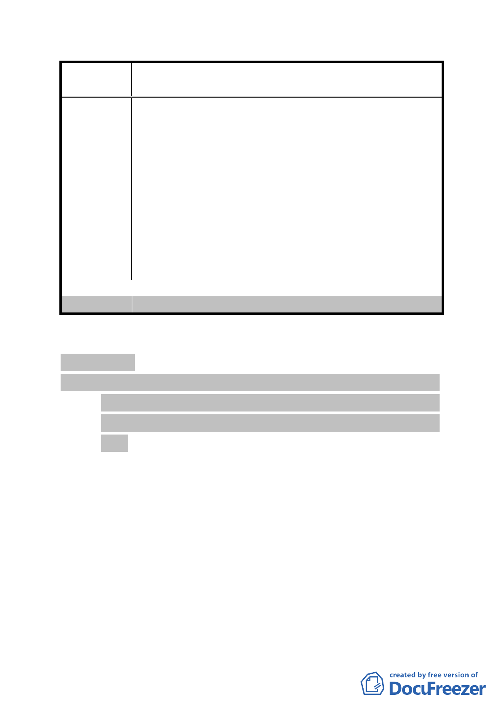

案
名
修訂臺北市「基隆河（中山橋至成美橋段）附近地區土地使
用分區與都市設計管制要點」（北段地區）計畫案
坪的空地，最近我計畫要蓋，但建築師告訴我因為這塊地深
度較淺，最淺的不到 20 公尺，依據規定，「前院 6 公尺，後
院 3 公尺，後院深度比 0.6」，最多設計到 5 樓，而且 5 樓
要退縮，屋型扁平狀，這次通盤檢討之後，「前院 5 公尺，
後院 3 公尺，後院深度比 0.4」，雖然有放寬，但也只能到 6
樓，還是要退縮，附近鄰地角地，有 7 樓、9 樓甚至到 10
幾樓，到中間突然降至 5 樓，感覺非常不協調，希望本次通
盤檢討住宅區供住宅使用能跟住宅區供住商混合使用一樣
放寬比照第三種住宅區之規定，「前院 3 公尺，後院 2.5 公
尺，後院深度比 0.25」，如果能設計到 7 樓不用退縮，對於
格局較完整，結構也比較理想，空地綠化也可以多一點，對
於環境也有貢獻，懇請委員會同意。
建 議 辦 法 （同上）
委 員 會 決 議 同編號 1。
討論事項 二
案名：「變更臺北市文山區指南段二小段 163 地號土地保護區為休
閒農業特定專用區主要計畫案」暨「擬定臺北市文山區指
南段二小段 163 地號土地休閒農業特定專用區細部計畫
案」
案情概要說明：
一、計畫範圍及面積：
本計畫區位於貓空地區，近貓空纜車「貓空站」，且位於「變
更臺北市文山區指南里、老泉里部分保護區為機關用地（供
休閒農業服務設施使用）、停車場用地及擬定可申請開發許
可範圍主要計畫案」之可申請開發許可範圍內，以文山區指
南段二小段163地號土地之地籍線為界，面積1,158平方公尺。
二、計畫緣起：
本市文山區「貓空」地區因具原始自然環境，並有水土保持、
- 102 -